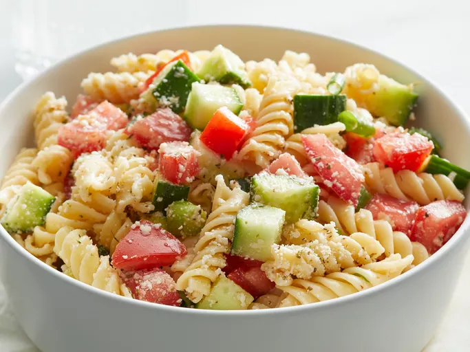

Pasta Salad

Description
A coloful and simple pasta salad. Perfect for summer
Ingredients
- 1 (16 ounce) package uncooked rotini pasta
- 1 (16 ounce) bottle Italian salad dressing
- 2 cucumbers, chopped
- 6 tomatoes, chopped
- 1 bunch green onions, chopped
- 4 ounces grated Parmesan cheese
- 1 tablespoon Italian seasoning
Steps
- Gather all ingredients.
- Bring a large pot of lightly salted water to a boil.
- Place pasta in the pot, cook for 8 to 12 minutes, until al dente, and drain.
- Toss cooked pasta with Italian dressing, cucumbers, tomatoes, and green onions in a large bowl.
- Mix Parmesan cheese and Italian seasoning in a small bowl, and gently mix into the salad.
- Mix Parmesan cheese and Italian seasoning in a small bowl, and gently mix into the salad.
- Cover, and refrigerate for at least 30 minutes before serving.
- Enjoy!